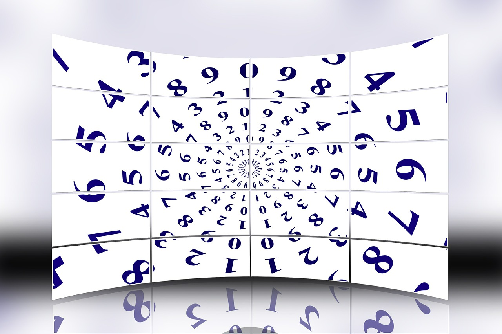

4. Ampliamos... y conjeturamos
Curiosidades. Distintos tipos de números y preguntas sin resolver sobre ellos
En el mundo de los números enteros, hay clases de números de nombres muy curiosos que dan lugar a muchas cuestiones que aún están por resolver.
Existen, entre otros, los:
Desde Euclides (siglo III a.C.) se sabe que existen infinitos números primos. Pero,
-
- ¿hay infinitos primos gemelos?
- ¿hay infinitos primos tales que restándoles 1 nos dan un cuadrado perfecto? (como el 5, el 17, el 37, etc.)
- ¿es verdad que entre cuadrados consecutivos siempre hay algún número primo? (comprueba que es cierto entre 4 y 9, entre 9 y 16, entre 16 y 25, etc)
A esas preguntas, nadie ha encontrado aún respuesta.
Desde Euclides (siglo III a.C.) se conocen fórmulas para obtener números perfectos pares, pero aún no se sabe si existe algún número perfecto que sea impar.
¿Serás tú, tal vez, la primera persona en localizar uno o el primero en demostrar que no existe ningún número perfecto impar?
Curiosidades famosas. El caso de "La conjetura de Goldbach"
Si observamos:
4 = 2 + 2
6 = 3 + 3
8 = 5 + 3
10 = 7 + 3
12 = 7+5
(...)
podríamos preguntarnos: ¿será cierto que todo número par mayor que 2 es expresable como suma de dos primos?
Eso mismo se planteó hace más de dos siglos y medio Christian Goldbach, pero no fue capaz de demostrarlo, de ahí que quedase en Conjetura su afirmación.

Todo número par mayor que 2 puede escribirse como suma de dos números primos.
Christian Goldbach (1742)
Investiga sobre esta conjetura, sobre su fama, si ha sido demostrada, ¿cuánto se paga/pagó por su demostración?... y elabora un pequeño resumen-informe que mostrarás en clase a tu profesor y al resto de compañeros. Puedes apoyarte en vídeos o artículos que localices en la web.
Para terminar
Veamos este capítulo de la serie Alterados por Pi, de manos del profesor Adrián Paenza, donde recopilaremos todo lo visto y trabajado sobre los números primos y algunas peculiaridades y utilidades más acerca de estos curiosos e importantes números.